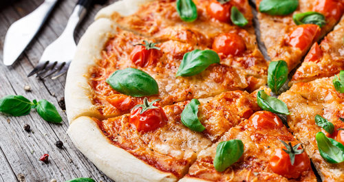
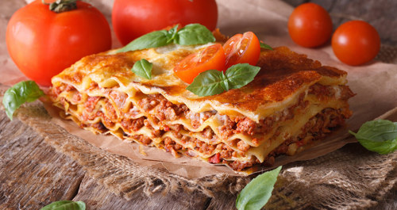
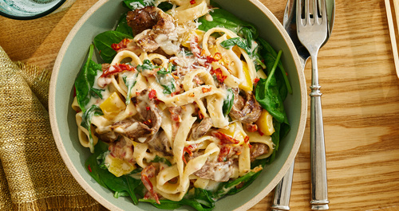
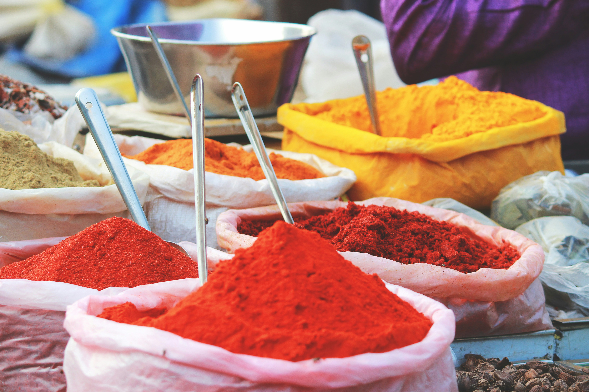
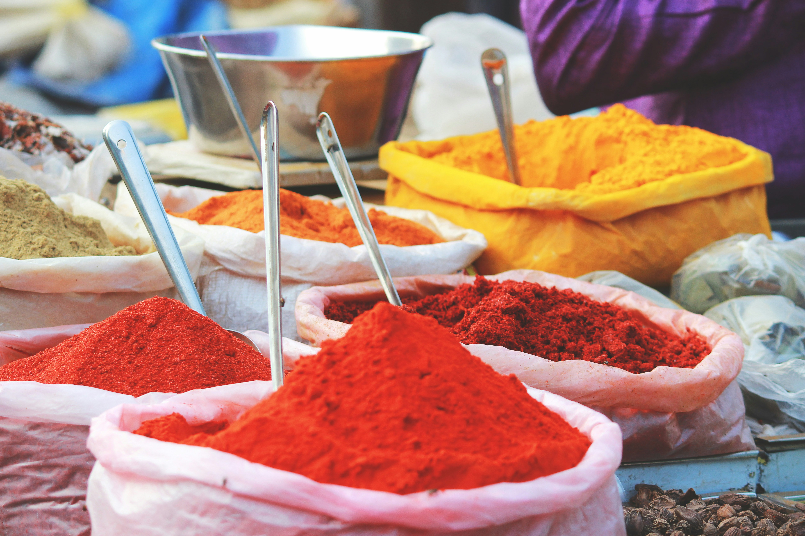

Italian Cuisine

What does Italian Cuisine look like?
By: Anonymous User
Est. time to read: 5 minutes
When we think of Italian cuisine, images of rich flavors, fresh ingredients, and time-honored cooking traditions come to mind. From the rustic charm of a wood-fired pizza to the delicate layers of a handmade pasta, Italian food is not just about taste, but an experience that reflects the heart of Italy itself. But what does Italian cuisine really look like, and how do its regional differences shape the dishes that define the country’s culinary identity? In this post, we’ll explore the varied, colorful, and flavorful landscape of Italian cuisine, from its iconic dishes to the lesser-known regional specialties.
Why is the Italian Cuisine is so tasty?
1. Fresh, Quality Ingredients:
Fresh, high-quality ingredients are the cornerstone of Italian cuisine. Whether it's San Marzano tomatoes or extra virgin olive oil, Italian cooking emphasizes simple yet flavorful components. The authenticity and taste of the dishes rely heavily on the excellence of these ingredients.
2. Simplicity and Simplicity:
Simplicity is a hallmark of Italian cuisine, where dishes often feature just a few ingredients to highlight their natural flavors. Classics like al dente pasta with fresh tomato and basil sauce or an authentic margherita pizza perfectly embody this straightforward yet flavorful approach.
3. Regional Variety:
Italy boasts incredible culinary diversity, with each region offering its own traditional specialties. From creamy risottos in the north to handmade pasta in the center and seafood dishes in the south, every area showcases distinct ingredients and cooking methods.
4. Love for Local Products:
Italians hold a strong appreciation for local and seasonal ingredients, emphasizing freshness and regional specialties in their cuisine. Local markets play a vital role in the Italian culinary tradition, offering the finest produce that reflects the essence of each region.
5. Tradition and Family:
Italian cuisine is deeply rooted in tradition and family values. Many dishes are cherished family heirlooms, handed down through generations, and mealtime often serves as a special occasion for bringing loved ones together.
6. Focus on Experience:
Italian cuisine is more than just a meal; it’s a holistic experience. Dining is a social activity, and Italians cherish the moments spent around the table, enjoying good food, laughter, and meaningful conversations.
Popular Italian Dishes
Margarita
When thinking of Italian cuisine, pizza is undoubtedly the first dish that comes to mind. With a variety of toppings to suit every palate, pizza holds a special place in Italy’s culinary heritage. Although considered fast food globally, in Italy, it is celebrated as a cornerstone of the cuisine.
The Margherita pizza is the most popular choice in Italy, cherished worldwide for its simplicity and universally appealing flavor. This classic dish is made with basic yet high-quality ingredients such as flour, olive oil, water, dry yeast, salt, sugar, tomatoes, oregano, basil, and mozzarella cheese. Its ingredients also make it a great option for vegetarians, offering a delicious and satisfying meal.
Lasagna

Lasagna, a beloved Italian dish that originated in Bologna, is a staple of the country's rich culinary tradition. Often regarded as a type of pasta, it is prepared in various ways using a range of ingredients.
Classic lasagna typically includes layers of lasagna sheets, ground meat, onions, tomatoes, tomato paste, olive oil, garlic, butter, milk, flour, black pepper, salt, and Parmesan cheese. The dish is assembled by layering the meat and tomato sauce with the pasta sheets, then topped with béchamel sauce and cheese before being baked to perfection in the oven.
Fettucini Alfredo
Fettuccine Alfredo is a classic Italian pasta dish renowned for its creamy, flavorful appeal. Traditionally made with butter and Parmesan cheese, modern versions often include chicken breast, mushrooms, olive oil, cream, basil, garlic, and black pepper. The dish was created in the early 20th century by Alfredo Di Lelio at his restaurant in Rome.
Although the original recipe did not feature cream or chicken, the dish has evolved over time, gaining popularity worldwide with various adaptations. Known for its rich, velvety texture and satisfying taste, Fettuccine Alfredo has become a favorite and is commonly found on menus in restaurants across the globe.
Lesser-known Italian dishes to prepare at home
Gianduia Semifreddo (Chocolate-Hazelnut Frozen Dessert)
This semifreddo, inspired by Piedmont's famous chocolate-hazelnut combo, holds its shape well thanks to ground hazelnuts and melted chocolate. Serve with chocolate sauce and toasted hazelnuts for extra flavor.
Chicken Cacciatore
"I was done with salads and sandwiches. After seeing Bobby Flay’s chicken cacciatore throwdown, I craved something comforting—so I made it."
White Clam Pizza
"Inspired by a visit to Frank Pepe's, I recreated their clam pizza with great results. Use fresh littleneck clams, oregano, and a dough recipe from The Silver Spoon. To prep clams, soak them in salted water with cornmeal overnight to remove sand."
Thank you for reading my blog! If you find the information here interesting, you may also like posts of my colleagues!
Checkout them out:
 Did you know that Sushi, now a celebrated dish worldwide, was originally pickled fish preserved in vinegar before evolving into the rice-based delicacy we know today? Find this and more interesting information about Japan on this website!
This website will give you information about the cultures that have contributed to the development of Indian cuisine. Are you sure you know all the intricacies of dishes from different regions of India?
Did you know that Sushi, now a celebrated dish worldwide, was originally pickled fish preserved in vinegar before evolving into the rice-based delicacy we know today? Find this and more interesting information about Japan on this website!
This website will give you information about the cultures that have contributed to the development of Indian cuisine. Are you sure you know all the intricacies of dishes from different regions of India?
Don't forget to press the like button and to share this post to your friends!
Number of likes: 25
Views: 63